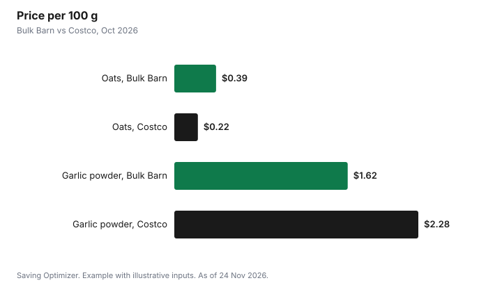

Food & Groceries · Canada
Bulk Barn vs Costco for Pantry Staples in Canada: When Small Bulk Wins

Costco is cheaper per 100 grams on most big-volume pantry staples, like oats, flour, sugar, rice and coffee. Bulk Barn wins when you only need a little: spices, baking extras, specialty flours and anything you'd struggle to finish before it goes stale. Use both: Costco for what you go through fast, Bulk Barn for the rest.
Key takeaways
- Costco was cheaper per 100 g on oats, flour, sugar, rice, almonds and coffee (Narcity, Oct 2026).
- Bulk Barn was cheaper on garlic powder: $1.62 vs $2.28 per 100 g.
- Bulk Barn lets you buy exactly the amount you need.
- Costco requires a paid membership.
- Small bulk wins for spices, trying new foods and small households.
Unit prices
| Item | Bulk Barn | Costco |
|---|---|---|
| Rolled oats | $0.39 | $0.22 |
| All-purpose flour | $0.31 | $0.10 |
| White sugar | $0.29 | $0.16 |
| White rice | $0.72 | $0.40 (basmati) |
| Almonds | $1.90 | $1.58 |
| Coffee | $3.35 | $2.21 |
| Garlic powder | $1.62 | $2.28 |

When small bulk wins
- Spices: buy small amounts to refill jars, and they stay fresh.
- Trying something new: buy 100 g before committing to a big bag.
- Specialty flours and baking items you use a few times a year.
- Small households: a 10 kg bag of flour can go stale before you finish it.
- No membership: Bulk Barn is open to everyone.
When Costco wins
If you bake every week, eat oatmeal daily or cook rice for a family, Costco's large bags cost far less per gram. Store them in airtight containers, and split big bags with a friend.
See whether a Costco membership is worth it and how to read unit prices.
Sources
- Narcity, I shopped at Costco and Bulk Barn to see which is actually cheaper for my pantry staples (23 Oct 2026), checked 24 Nov 2026.
Frequently asked questions
Is Bulk Barn cheaper than Costco?
Usually not per 100 g on big staples, but it was cheaper on garlic powder, and you can buy exactly what you need.
What should I buy at Bulk Barn?
Spices, specialty flours, baking extras and small amounts of things you're trying.
What should I buy at Costco?
Staples you go through quickly, like oats, flour, rice, sugar and coffee.
Do I need a membership for Bulk Barn?
No.
How do I keep bulk food fresh?
Store it in airtight containers in a cool, dry place, and buy only what you'll use.
Researched and drafted with AI assistance and fact-checked against official Canadian sources. How we create content.
Note: Prices vary by store and change often. Education only.